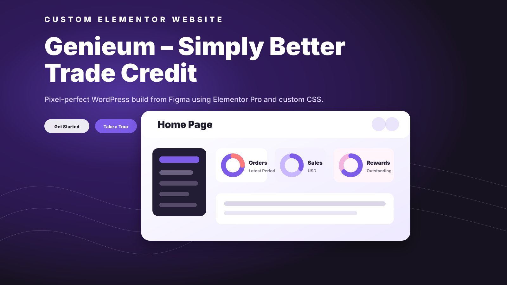

Figma to WordPress / Elementor Pro
Genieum Custom Elementor Website
A custom WordPress website converted from Figma designs using Elementor Pro. The project focused on clean implementation, responsive layout behavior, and custom CSS refinements for stronger styling control beyond standard builder settings.

Overview
Project Overview
The Brief
Convert the Figma Design Into WordPress
Genieum needed its Figma website design converted into a responsive WordPress site while keeping the visual direction clean, modern, and aligned with the approved design.
The build required more control than standard Elementor settings alone could provide, especially for layout details, spacing, and unique styling refinements.
Solution
Elementor Pro Build With Custom CSS
I developed the website in WordPress using Elementor Pro, carefully translating the Figma layout into editable sections while keeping the design visually consistent across screen sizes.
I also added custom CSS where needed to improve styling precision, responsive behavior, and layout control beyond the default builder options.
Highlights
Build Highlights
Figma to WordPress
Converted the approved Figma direction into a responsive WordPress website.
Elementor Pro Development
Built editable sections using Elementor Pro for easier long-term management.
Custom CSS Styling
Added CSS refinements for layout details and styling control beyond the builder defaults.
Responsive Layout
Focused on clean desktop, tablet, and mobile presentation.
Modern Visual Polish
Kept the final build clean, sharp, and aligned with the modern SaaS-style design.
Practical Build Structure
Delivered a site structure that remains manageable inside WordPress.
Preview
Visual Preview
A stylized project preview for the Genieum Figma-to-WordPress Elementor build.
Outcome
Clean, Responsive WordPress Website
The result is a clean, modern, responsive WordPress website that reflects the original Figma design while remaining manageable through Elementor Pro.
The custom CSS enhancements helped improve polish, consistency, and flexibility across the final build.
Stack
Tools Used
- WordPress
- Elementor Pro
- Figma
- CSS
Let's Build Something Great
Need a Figma Design Built in WordPress?
I can help turn approved mockups into clean, responsive Elementor Pro pages with practical custom CSS refinements where needed.